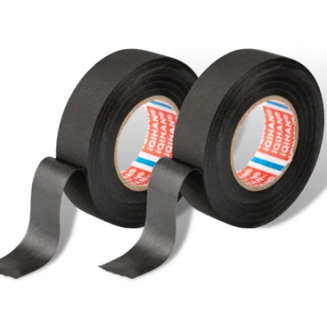

Velvet (Flock) Tape
Material: PET flock fibers bonded to a woven or PVC backing, soft plush texture.
Typical use: Cabin-facing harness runs near trim and panels — squeak and rattle prevention.
植绒胶带（絨面胶带）
材质：PET植绒纤维粘合在无纺布或PVC基材上，表面柔软细腻。
典型用途：贴近内饰面板的线束段，防止异响和抖动噪音。